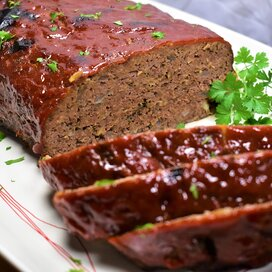

Meatloaf

Description
This is a recipe from Betty Crocker's Picture Cook Book
It can be found on page 275.
Serves: 8
Estimated total time is around 2 hours.
Ingredients
- 1 lb ground beef
- 1/2 lb ground lean pork
- 2 cups bread crumbs
- 1 egg, beaten
- 1 1/2 cups milk
- 4 tbsp inced onion (4 small spoonfuls of minced onion)
- 2 tsp salt
- 1/4 tsp pepper
- 1/4 tsp dry mustard
- 1/8 tsp sage
- 3 tbsp ketchup
Steps
- Preheat oven to 350°F
- Mix the following:
- 1 lb ground beef
- 1/2 lb ground lean pork
- 2 cups bread crumbs
- 1 egg, beaten
- 1 1/2 cups milk
- 4 tbsp inced onion (4 small spoonfuls of minced onion)
- 2 tsp salt
- 1/4 tsp pepper
- 1/4 tsp dry mustard
- 1/8 tsp sage
- Pack into greased 9X5X3" loaf pan
- Spread 3 tbsp ketchup over top
- Bake for 1 1/2 hours
- Unmold (optional)